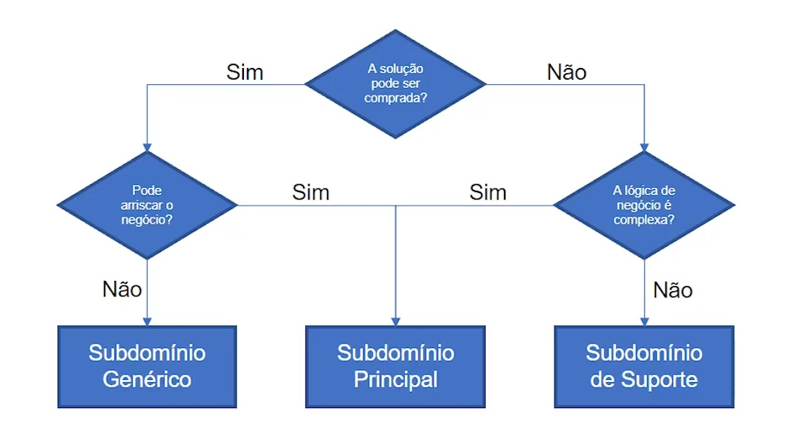

- Aula de introdução
- _O que é DDD
- _Desafios dos projetos
- _Design Estratégico
- _E quem nos ensina sobre os subdomínios?
Aula de introdução
_O que é DDD
- Domain Driven Design Mecanismo para ajudar a resolver problemas de forma estruturada e de forma que ajude a escalar ajuda a pensar e esboçar a solução antes de sair escrevendo código, evitando escrever código que cause débitos técnicos
_Desafios dos projetos
- Falta de clareza nos objetivos;
- Precisamos conversar com os stakeholders e entender o problema que iremos resolver.
- Dependendo do ator que conversamos iremos obter respostas diferentes
- Scoope Creep;
- Aquele que não para de mudar o escopo
- Expectativa irreal "isso é fácil, vc faz em 5minutos"
- Recursos Limitados
- Falha na Comunicação
- DDD é muito sobre comunicação
- Atraso nas Entregas
- Falta de Transparência
_Design Estratégico
Porque e O que
- Gestão Pedagógica
- Gestão Financeira
- Gestão Comunicação
- Gestão Administrativa
- Gestão Recursos Humanos
O que é o domínio?
- é o coração do software! Vamos desenvolver soluções para o negócio. Mesmo ela sendo permeada por outras coisas.
Domínio é o negócio em si, aquilo que a empresa faz, é o motivo dela existir (é o todo).
Podemos separar em 3 tipos de domínios:
- Subdomínios principais;
- Subdomínios genéricos;
- Subdomínios de suporte;
Subdomínio principal:
É o negócio que o diferencia dos outros no mercado e possui lógica complexa. Podemos ter N subdomínios principais.
O domínio vive dentro de um contexto, poi exemplo:
Para uma escola, o campo de contabilidade não é um subdomínio. Mas se você terceirizar para uma empresa de contabilidade esta tarefa, para esta outra empresa esta tarefa será um subdomínio.
Subdomínio Genérico
É o que todo mundo faz, atividades que são comuns no mercado mas que precisam existir para que o negócio funcione. Por exemplo, o portal da empresa, a loja online, as funções de autenticação e afins. A lógica contida neste tipo de subdomínio é complexa.
Subdomínio de suporte
Apoia o negócio da empresa, esse não da nenhuma vantagem estratégica para o negócio e "apenas" complementa o que o subdomínio principal faz. Por exemplo, a gestão de dados dos pais dos alunos, integrações com o orgão regulador e etc.
É importante lembrar que cada subdomínio é um negócio e temos que saber o que priorizar. O Subdomínio principal é o dominio que alavanca, os outros são importantes também, mas a princípio precisamos priorizar o principal.
_Um mapa que pode ajudar a identificar os subdomínios
Apesar de não existir uma regra geral, podemos seguir um fluxo generalista para nos auxiliar a separar os subdomínios.

_E quem nos ensina sobre os subdomínios?
Falar com alguém que tenha XP, que domine o processo, que conheça o negócio. Esta pessoa é a Domain Expert. Esta pessoa é quem conta a história, quem escreve os processos e procedimentos.
Enfim, não há uma receita de bolo, uma resposta fechada, temos que considerar muito o trade off, os riscos, o quanto vale a pena no contexto do negócio.